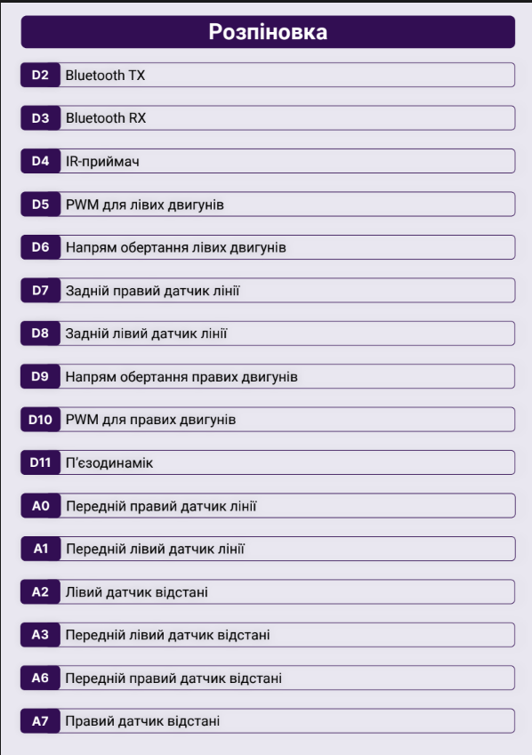
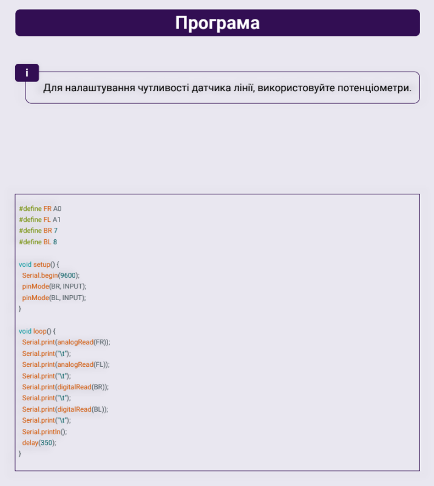
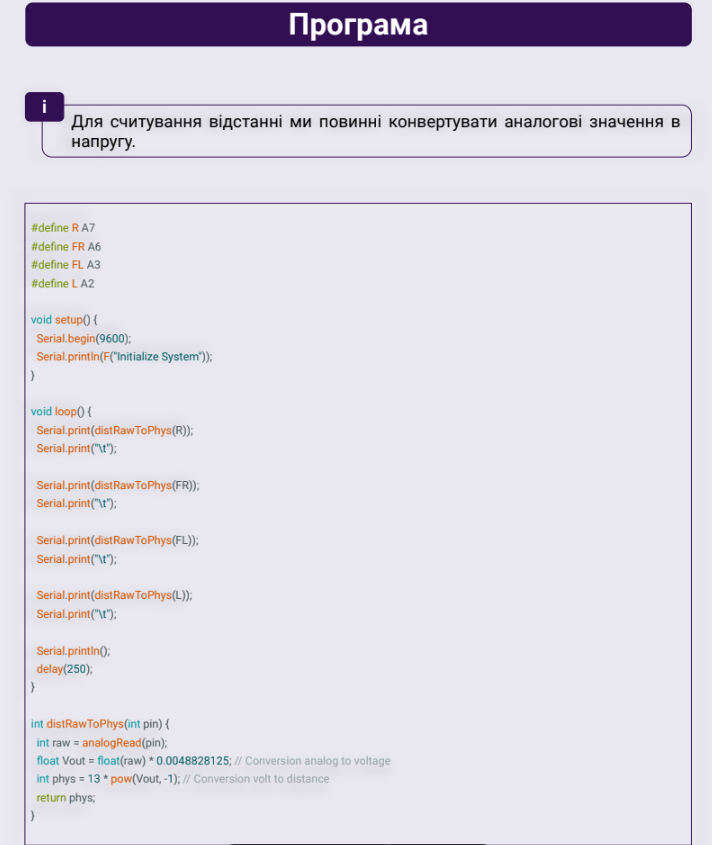

Підказки до MakerTime

Плата: Arduino Nano
Processor: Atmega328P
Отримання значень з датчика чорної лінії

Отримання значень з датчика відстані

Функція для керування моторами
void movement(int pwmA, int SpeedA, int pwmB, int SpeedB){
int truePWMB;
int truePWMA;
if (SpeedA == 1){
truePWMA = pwmA * -1;
}
else{
truePWMA = pwmA;
}
if (SpeedB == 1){
truePWMB = pwmB * -1;
}
else {
truePWMB = pwmB;
}
digitalWrite(6, SpeedA);
digitalWrite(9, SpeedB);
analogWrite(5, truePWMA);
analogWrite(10, truePWMB);
}
Приклад виклику функції для керування моторами
movement(50, 1, 50, 1); // Для руху назад
movement(50, 0, 50, 0); // Для руху вперед
movement(50, 1, 0, 1); // Для руху вліво
movement(0, 1, 50, 1); // Для руху вправо
movement(0, 0, 0, 0); // Для зупинки